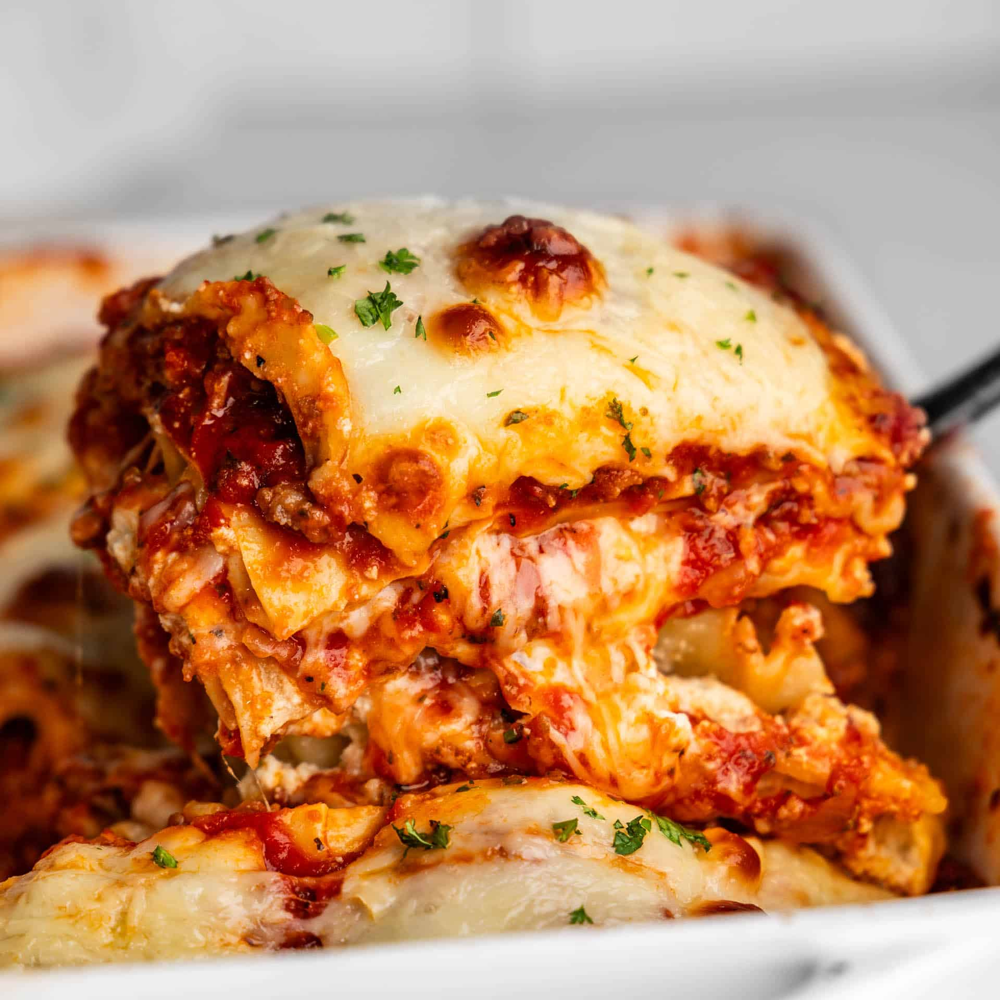

Home
Lasagna

Description
Lasagna is a classic Italian dish made by layering wide pasta sheets with a rich meat or vegetable sauce, creamy béchamel, and plenty of melted cheese. Each layer is carefully stacked, creating a hearty, flavorful casserole that’s baked until golden and bubbly.
Perfect for family dinners, lasagna combines savory, cheesy, and saucy goodness in every bite comfort food at its finest.
Ingredients
- Oven ready Lasagna noodles
- Ground beef
- Tomato sauce
- Onion & garlic
- Olive oil
- Herbs (basil, oregano, thyme)
- Cheese
- Egg
- Salt & pepper
Steps
- Cook the meat: Fry chopped onion and garlic in a pan, add ground beef, and cook until brown. Pour in tomato sauce and a little salt and herbs.
- Mix the cheese: In a bowl, mix ricotta (or any soft cheese) with an egg.
- Build the lasagna: In a baking dish, put some sauce, then noodles, then the cheese mix, then shredded mozzarella. Repeat until the dish is full. Top with sauce and some cheese.
- Bake: Cover with foil and bake at 190°C (375°F) for 25–30 minutes. Take off the foil and bake 10 more minutes until the top is golden.
- Rest & serve: Let it sit 10 minutes before cutting so it holds together.